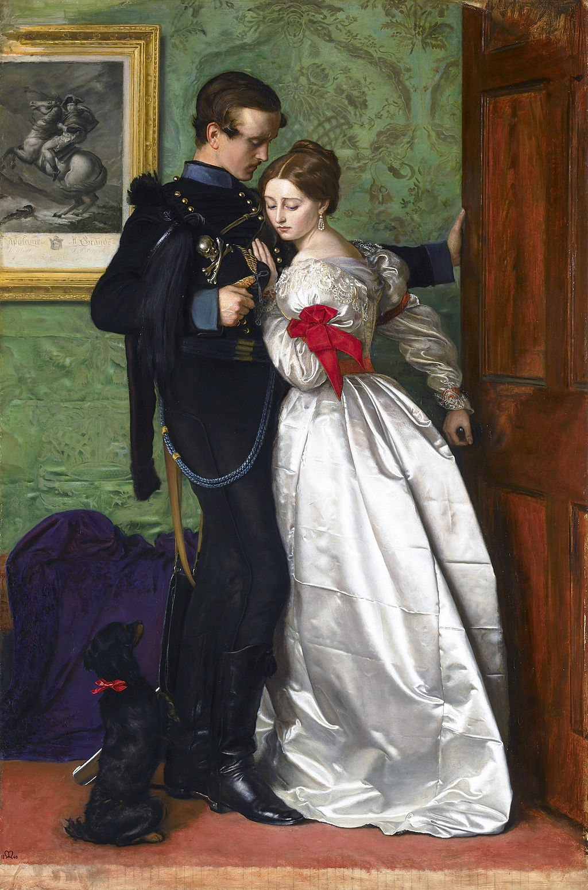

<head>
<meta charset="UTF-8" />
<meta name="keywords" content="drawing, painting" />
<meta name="description" content="drawings by Sunjy" />
<title>Sunjy</title>
<link rel="shortcut icon" type="image/x-icon" href="../../mImages/mCommon/favicon.ico" media="screen" />
<link rel="stylesheet" type="text/css" href="../../mCsses/mCommon/mCssA.css" />
<link rel="stylesheet" type="text/css" href="../../mCsses/mCommon/mCssB.css" />
<link rel="stylesheet" type="text/css" href="../../mCsses/mCommon/mCssC.css" />
<link rel="stylesheet" type="text/css" href="../../mCsses/mCommon/mCssD.css" />
<link rel="stylesheet" type="text/css" href="../../mCsses/mContent/mCssA.css" />
<link rel="stylesheet" type="text/css" href="../../mCsses/mContent/mCssB.css" />
<link rel="stylesheet" type="text/css" href="../../mCsses/mContent/mCssC.css" />
<link rel="stylesheet" type="text/css" href="../../mCsses/mContent/mCssD.css" />
</head>
<script type="text/javascript" src="../../mScripts/mContent/mContentAA.js" /></script>
<script type="text/javascript" src="../../mScripts/mContent/mContentAB.js" /></script>
<script type="text/javascript" src="../../mScripts/mContent/mContentAC.js" /></script>
<script type="text/javascript" src="../../mScripts/mContent/mContentAD.js" /></script>
<script type="text/javascript"></script> 
<script type="text/javascript">
document.write('<div class="mImgAbsolute"></div>');
/*
document.write('<p class="mFontSizeBColor" />From a white paper...</p>');
document.write('<table class="center"><tr><td>');
document.write('');
document.write('</td></tr></table>');
*/
</script>


<script type="text/javascript">
document.write('<p class="mFontSizeBColor" />The Black Brunswicker </p>');
document.write('<p class="mFontSizeSColor" />The Black Brunswicker by John Everett Millais was inspired by the exploits of the Black Brunswickers, a German volunteer corps of the Napoleonic Wars, during the Waterloo campaign.<br><br>Millais depicts a Brunswicker about to depart for battle. His sweetheart, wearing a ballgown, restrains him, trying to push the door closed, while he pulls it open.<br><br>This scene was imagined to have occurred during a ball, that took place on 15 June 1815, from which the officers departed to join troops at the Battle of Quatre Bras.<br><br>The artist has expertly contrasted the officer’s black broadcloth and the lady’s pearl-white satin in a moment of tender conflict.<br><br>Millais represented the menacing presence of Napoleon in the engraving after Jacques-Louis David’s Napoleon Crossing the Alps, which is framed on the wall.<br><br>However, its presence perplexed critics and caused multiple interpretations. Did the print imply the female character was an admirer of Napoleon?<br><br>The daughter of Charles Dickens was used as a model for the woman seen in this painting. The male model was an anonymous soldier who died shortly afterward.<br></p>');
document.write('<table class="center" /><tr><td>');
document.write('<br>Millais depicts a Brunswicker about to depart for battle. His sweetheart, wearing a ballgown, restrains him, trying to push the door closed, while he pulls it open.<br><br>This scene was imagined to have occurred during a ball, that took place on 15 June 1815, from which the officers departed to join troops at the Battle of Quatre Bras.<br><br>The artist has expertly contrasted the officer’s black broadcloth and the lady’s pearl-white satin in a moment of tender conflict.<br><br>Millais represented the menacing presence of Napoleon in the engraving after Jacques-Louis David’s Napoleon Crossing the Alps, which is framed on the wall.<br><br>However, its presence perplexed critics and caused multiple interpretations. Did the print imply the female character was an admirer of Napoleon?<br><br>The daughter of Charles Dickens was used as a model for the woman seen in this painting. The male model was an anonymous soldier who died shortly afterward.<br>" />');
document.write('</td></tr></table>');
</script>


